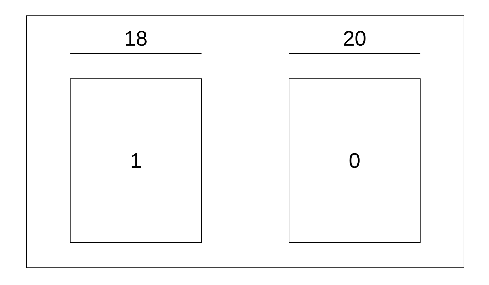

Chapter 21 Random Variables
Let’s keep going with our “Randomly draw everything out of a box” philosophy and talk about surveys and random variables. All this means is that the numbers/results we get are due to chance.
21.1 Connecting the Dots
We’ll use our box models from before to describe a wide array of scenarios. While these may be easy to understand and use to talk about probabilities, wouldn’t it be nice if there was a way to summarize their results in a neat way like we did with our summary statistics? Of course it would!
For example, let’s pretend that we’re going to play roulette \(n\) times and want to know how much money we’re going to win (or lose). In this case, we’d want to find the sum of the \(n\) draws. If we’re doing a survey of a class, we may be interested in the average of the \(n\) draws (i.e. the average height of a large class on campus), or we may want to find out what percentage of people feel a particular way on an issue (i.e. what percentage prefer hamburgers to hot dogs).
Luckily for us, such summaries exist! Let’s see what those are.
21.2 Expected Value
The first type of a summary we’ll talk about is the expected value (EV). This helps us to understand the distribution of values in our box, similar to how the average helped us get a baseline for the population in Chapter 12. As we outlined above, there’s three likely scenarios of wanting to summarize when we’d like a box model: when we want the sum of \(n\) draws, the average of \(n\) draws, or the percent of the time we get a particular value in \(n\) draws.
We’ll start with the sum of \(n\) draws. If we know what the values of the tickets are in the box, we can quickly compute their average by adding up the values on the tickets, then dividing by the number of tickets in the box. Remember how in regression, when we didn’t know anything else about a person we were making a prediction for, we’d predict the average? The same is true here! We don’t necessarily know what number we’re going to get on any of our given \(n\) draws, so we’ll just say that we’ll get the average value of all the tickets on each of our draws. To figure out our sum, we’ll just add our average the number of times (\(n\)) that we draw out of our box. But adding the same number over and over again is just multiplication! We can thus get the following formula for the EVsum:
\[\text{EV}_\text{sum} = n \cdot \text{Average of the box}\]
Finding the EVsum is useful in situations where we’re interested in adding up numbers we get based on the probabilities of each number. A perfect use case is with gambling. We’ll use our roulette example from the last chapter, but instead of finding the probability of winning, we want to find out how much money we expect to win if we play 76 times. Let’s say we bet $1 on any red space. If the ball lands on a red space, we win $1. Otherwise, we lose our $1. First, let’s make a box. Remember: your box should represent one time you play the game. We’ll make our draws with replacement, since we can’t get rid of a spot on a roulette wheel after the ball lands on it.
Note: if you have more draws than tickets in your box, you should always be drawing with replacement.
To find the average of the box, we take the value on the ticket times the number on each ticket, add up those products, and divide by however many tickets are in our box. This means the average is \(\frac{\left( 18 \cdot 1 \right) + \left( 20 \cdot -1 \right)}{38} = \frac{18 - 20}{38} = \frac{-2}{38}\). All that’s left to find the EVsum is to multiply by the number of times we play (\(n = 76\)), so our EVsum is \(76 \cdot \frac{-2}{38}\) = -$4. Guess the phrase “Vegas wasn’t built on winners” was right ¯\_(ツ)_/¯
To find the EVsum in R is super easy! You can think of the box as being a vector, with the elements corresponding to the tickets. This makes finding the EVsum simple: take the number of draws times the average of the vector. Our example above can then be done like so:
# Create box with 18 1s and 20 -1s
box = c(rep(1, 18), rep(-1, 20))
# Calculate EVsum for 76 draws
76 * mean(box)## [1] -4Another common thing to find would be the expected value of the average – EVaverage or EVavg – of the number of draws. Spoiler alert: you already found this! It’s just the average of the box. Nothing tricky about it, and it should make sense intuitively: if you want the average of all the draws, you should just take the average of the box, add it up \(n\) times (for \(n\) draws), then divide by the number of draws. So \(\text{EV}_\text{avg} = \frac{n \cdot \text{Average of the box}}{n} = \text{Average of the box}\). As we saw in the last example, R makes this easy to find because of the mean() function. Just to prove it to you, let’s do a quick demonstration. We’ll use the sample() function to make our 76 random draws out of box with replacement, and we’ll calculate the average of these 76 draws. We’ll repeat this process 100,000 times (thanks, for loops!), saving the average of the 76 draws in a vector called means each time. Lastly, we’ll compare the average of these 100,000 averages to the average of the box, and we’ll notice that they’re very close to each other.
# Set seed for reproducibility
set.seed(42)
means = c()
for(i in 1:100000){
means[i] = mean(sample(box, 76, replace = TRUE))
}
mean(means)## [1] -0.052905## [1] -0.05263158The last type of expected value we may be interested in is for the percentage of draws that are what we’re looking for, and we’ll call it the EVpercent, or EV% for short. This is easy to find, but to make it easier to do, we should switch our box up ever so slightly. If we wanted to know the percentage of time that we would win our game of roulette instead of how much money we won, we should change our box from before to be a “Yes/No”, or a 0-1 box. That is, if we win, we drew a 1, and if we lose we drew a 0.

Then, we just find the percentage of 1s in our box to find the EV%. There are 18 wins out of 38 outcomes, so our EV% is 47.4%. Using box from above, we can find this in R by taking the mean of a condition:
## [1] 47.36842Note: this is the same as finding the EVavg of the 0-1 box.
21.3 The SD Shortcut
If we have a box model that looks like this:
we can compute the SD of the box quickly using the following formula \[ \text{SD}_\text{box} = | a - b | \sqrt{\frac{\text{Number of A tickets}}{\text{Total number of tickets}} \times \frac{\text{Number of B tickets}}{\text{Total number of tickets}}}\]
where \(a\) and \(b\) are the values on the tickets. Why are we introducing this? Keep reading and you’ll see why!
21.4 Standard Error
“I understand how the average and expected value are the same, but what about the standard deviation?”-You, probably
Wonder no more! Just like the standard deviation describes the spread for a set of data, we can calculate the standard error (SE) for all of the above situations to describe the spread of our standard error.
To calculate the SEsum, we’ll start with the SD of the box (which you can use the SD formula above to find), and multiply it by the square root of the number of draws. That is,
\[ \text{SE}_\text{sum} = \text{SD}_\text{box} \hspace{1mm} \cdot \sqrt{n} \]
Note: this is called the square root law.
To find the EVavg from the EVsum, we just divided by \(n\). Following the same logic, we’ll divide the SEsum by \(n\) and we’ll get the SEavg:
\[\text{SE}_\text{sum} = \text{SD}_\text{box} \hspace{1mm} \cdot \sqrt{n}\]
\[\text{SE}_\text{avg} = \frac{\text{SE}_\text{sum}}{n} = \frac{\text{SD}_\text{box} \hspace{1mm} \cdot \sqrt{n}}{n} = \frac{\text{SD}_\text{box} \hspace{1mm} \cdot \sqrt{n}}{\sqrt{n}\sqrt{n}}\]
\[\text{SE}_\text{avg} = \frac{\text{SD}_\text{box}}{\sqrt{n}}\]
And just like we said about getting the EV% from the EVavg, we convert to a 0-1 box and multiply the new average by 100. Same logic tells us that to get the SE% from the SEavg, we can just multiply the SEavg by 100.
\[\text{SE}_\% = \frac{\text{SD}_\text{box}}{\sqrt{n}} \times 100%\]
21.5 Law of Averages
We can see from the above definitions of standard error that as \(n\) increases, the SEsum also increases, while the SEavg (and therefore the SE%) decrease by a factor of \(sqrt{n}\). We call this the law of averages. It should make intuitive sense: the more times you repeat an experiment, the more possible values you have (a bigger SEsum), but because you have a wider possible range of numbers, you’ll most likely be closer to the average since more numbers should lie closer to the average.
Take flipping a coin as an example. If we start by flipping a coin 4 times and counting the number of heads, we may not get exactly 2 heads, but the range of possible heads is smaller (it’d be 0, 1, 2, 3, or 4 heads). Our spread would be pretty small, but getting 0 heads on 4 flips isn’t close to our expected value. If, however, we flipped the coin 4 million times, we’d be much closer to that 50% mark we’d expect (SEavg/%), but the spread of the number of heads (SEsum) would be bigger since there are way more possible numbers of heads.
21.6 Intervals
So why does that law of average stuff we just talked about matter? Because we can now combine the EV and SE to talk about an interval for our experiments!
In Chapter 10.2, we learned how to find the area between -Z and +Z on a normal curve. Since we’ve concluded that the EV is a random variable equivalent to the average, and the SE is a random variable equivalent to the SD, we can calculate Z-scores just as before. Our new formula for this is
\[\text{Z} = \frac{\text{Value} - \text{EV}}{SE}\]
where the EV and SE are both for either the sum, average, or percent. For example, if the EV is the EVsum, then the SE is the SEsum.
This same kind of an interval can be computed for random variables. We call them confidence intervals, since they describe how sure (condfident) we are that our random variable will fall in that range. We used to calculate them by rearranging the Z-score formula to find the values, using both positive and negative Z. We’ll do the same, keeping in mind that the EV and SE are both for either the sum, average, or percent.
\[\text{Interval: } \hspace{2mm} \text{EV} \pm \text{Z} \times \text{SE}\]
The Z in the formula controls how wide the interval is, and just corresponds to the middle area of our level of confidence. As an example, if we want to have 95% confidence in our estimate of the EV, we’d use Z = 2 since the chart tells us that 95% of the area under the normal curve is between -2 and 2.
We interpret the interval (i.e. a 75% confidence interval) to mean that if we were to repeat the experiment 100 times, we’d capture the EV (and the actual value) 75 times.
{kind=link}